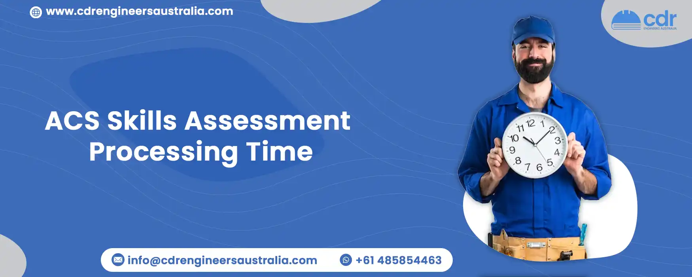
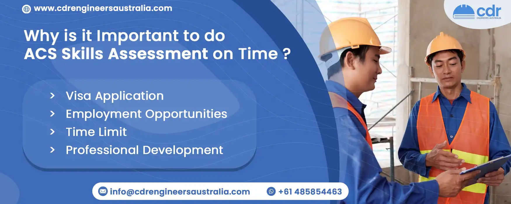

ACS Skills Assessment Processing Time
Table Of Content
- ACS Skills Assessment Processing Time
- What Is ACS Skills Assessment?
- Qualifies for Priority Processing?
- How to Apply for Priority Processing?
- What is the Processing Time?
- What Happens if You Don't Meet the Criteria?
- Renewal of Full Skills Assessment
- How Do You Apply for the ACS Program?
- Why Is It Important To Do ACS Skills Assessment On Time?
Are you planning to work in Australia's Information and Communication Technology (ICT) sector? If so, you may need to complete the ACS Skills Assessment process. However, it is important to know the processing time involved, as it can vary based on various factors.
This blog post will explore the ACS Skills Assessment process and the factors that can impact processing time. We'll also provide tips on making the process as smooth and efficient as possible, so you can complete your assessment and move forward with your plans to work in the Australian ICT industry.
What Is ACS Skills Assessment?
The ACS (Australian Computer Society) Skills Assessment is a process used to determine whether an individual's skills and qualifications meet the requirements for working in certain Information and Communication Technology (ICT) occupations in Australia. The ACS conducts the assessment and is the professional association for Australia's ICT sector.
The ACS Skills Assessment is necessary for individuals looking to migrate to Australia on a Skilled Migration visa or those already in Australia on a temporary visa who want to apply for permanent residency. The assessment process evaluates an individual's educational qualifications, work experience, and English language proficiency to determine whether they meet the criteria for their chosen occupation. You can contact us to know more regarding this topic.
The ACS Skills Assessment process varies depending on the occupation but typically provides evidence of academic qualifications, work experience, and English language proficiency. The ACS will assess the evidence provided and provide a report detailing whether the individual's qualifications and experience meet the requirements for their chosen occupation. The ACS Skills Assessment is an important step for those looking to work in the ICT sector in Australia. It is a requirement for many visa applications and can also be used to support job applications with potential employers.
Qualifies for Priority Processing?
Priority processing is available to a certain number of applicants who meet specific criteria. To qualify, applicants must complete their applications online and pay a fee of $600 (excluding GST). Note that paper-based applications are not eligible for priority processing. Before applying, you must check VETASSESS's official website to ensure you meet the qualifying conditions and understand the application procedures.
How to Apply for Priority Processing?
Once you've met the fee and payment requirements, you can select the expedited processing option. Attaching the necessary documents takes little time once the application has been completed. Before applying, ensure you have all the prerequisites and understand the qualifying conditions for priority processing.
What is the Processing Time?
According to VETASSESS, the skills assessment will be completed within ten business days of approving an application for priority processing, provided that no circumstances beyond their control delay the assessment. The VETASSESS official website provides information on application acceptance, assessment criteria, and the required documentation.
What Happens if You Don't Meet the Criteria?
Applicants who do not meet the prerequisites for priority processing will be evaluated using standard service deadlines. In these cases, applicants can receive a refund if the priority processing service costs less than the $100 administrative fee. It's important to note that VETASSESS is not responsible for any delays or drawbacks incurred by an applicant due to non-compliance with the priority processing service's standards, including inadequate documentation.
Renewal of Full Skills Assessment
Full skills assessment can be renewed for various reasons:
- Renewal involves re-evaluating the original successful skills assessment consequence, with professional growth or workforces to be recognized.
- When filing for renewal, it's necessary to prove the validity of your abilities against the most recent standards of your connected employment.
- Check if a revised skills assessment is necessary for the visa application.
- A positive full skills assessment is valid for three years from the issue.
- There is no chance to renew the skills assessment report after it has expired.
- Notify appropriate authorities if the skills evaluation must be renewed before expires.
- Provide a skills assessment application online through the online application portal.
How Do You Apply for the ACS Program?
- Evaluate all visa requirements for your specific migration purpose before applying for the ACS program.
- Consider working with a qualified immigration specialist or migration agent (MARA) to determine if you meet the requirements.
- Research visa options on the Australian Home Affairs Department website, paying particular attention to the "skills assessment" tab if you are a technology expert.
- Gather all supporting documents needed for the ACS program application, including educational records and relevant experience.
- Submit your ACS program application, ensuring all necessary information and documents are included.
Why Is It Important To Do ACS Skills Assessment On Time?
Visa Application
If you apply for a visa to work or study in Australia, you must provide an ACS skills assessment to prove your qualifications and work experience. Your visa application may be accepted or completed with a valid skills assessment.
Employment Opportunities
Many employers in Australia require a valid ACS skills assessment as part of their hiring process. If you have a skills assessment, you may take advantage of job opportunities and avoid delays in the hiring process.
Time Limit
The ACS skills assessment is valid for two years from the issue date. If you delay obtaining the assessment, you may miss out on job opportunities or repeat the process if your previous assessment has expired.
Professional Development
The ACS skills assessment can help you identify areas where you need to improve your skills or qualifications. By completing the assessment on time, you can plan your professional development and improve your chances of success in your career.
How Can We Help You?
At CDR Engineers Australia, we can assist you with your ACS skills assessment needs. Our team of experts can guide you through the process, ensuring that you provide all the necessary documents and meet the eligibility criteria. We can also advise you on the importance of completing the assessment on time and the consequences of failing. We aim to help you achieve your immigration goals and make the process as smooth and stress-free as possible. Contact us today to learn more about how we can assist you.